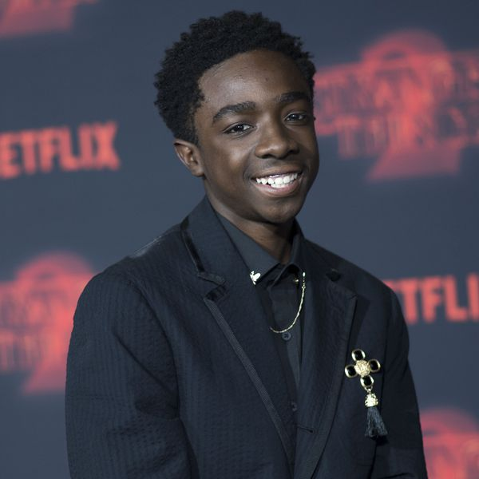
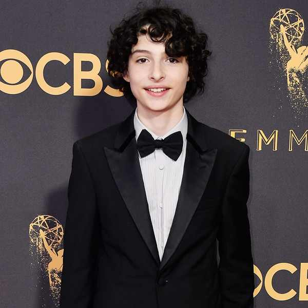

EXPLORE
↓YOU BETTER RUN! She's our friend and shes crazy!
Stranger Things is set in the fictional rural town of Hawkins, Indiana, during the early 1980s. The nearby Hawkins National Laboratory ostensibly performs scientific research for the United States Department of Energy, but secretly does experiments into the paranormal and supernatural, including those that involve human test subjects. Inadvertently, they have created a portal to an alternate dimension called "the Upside Down". The influence of the Upside Down starts to affect the unknowing residents of Hawkins in calamitous ways
Are you deaf? I thought we were friends, you know? But friends tell each other the truth. And they definitely don't lie to each other. You hurt me, do you understand? What you did sucks.
- Eleven
- Lucas
- Will
- Mike
- Dustin
Friends don't lie
At that point, we only had one script written. We didn’t have an established track record so she really loved the script. But it was kind of a leap of faith on her part,” Matt said.
The Duffer brothers, Interested in filmmaking from a young age, the Duffers moved from their native North Carolina to California to study filmmaking at Chapman University. They are twin brothers, and have had a close relationship since childhood.[1] They work on all of their projects as a duo. The Americans. This work changed her life.
The Duffer Brothers were born and raised in Durham, North Carolina. They began making films in the third grade using a Hi8 video camera that was a gift from their parents. They attended the Duke School for Children from grades K-8, a private suburban school, and then matriculated to the Charles E. Jordan High School, a large Durham public school. They relocated to Orange, California to study film at Chapman University's Dodge College of Film and Media Arts, where they graduated in 2007.[2][3] After writing and/or directing a number of short films, their script for the post-apocalyptic horror film, Hidden, was acquired by Warner Bros. Pictures in 2011.[4] The brothers directed the film in 2012, which was released in 2015. Director M. Night Shyamalan read the script and hired them as writer/producers on the Fox television series Wayward Pines.
From their experience in television, they began pitching their idea for Stranger Things, which Dan Cohen eventually brought to Shawn Levy. With Levy's 21 Laps production company on board, the show was quickly picked up by Netflix.[2][5] The show is set in 1983 Indiana and is an homage to '80s pop culture,[6] inspired and aesthetically informed by the works of Steven Spielberg, John Carpenter, Stephen King, and George Lucas, among others.
It premiered in the summer of 2016 to excellent reviews,[9] specifically for its characterization, pacing, atmosphere, acting, soundtrack, directing, writing, and homages to 1980s genre films, and subsequently began to develop a cult following online.[10] Review aggregator Rotten Tomatoes gave the series an approval rating of 95%, based on 55 reviews, with a weighted average score of 8.1/10. The site's critical consensus states, "Exciting, heartbreaking, and sometimes scary, Stranger Things acts as an addictive homage to Spielberg films and vintage 1980s television."[11] On August 31, 2016, Netflix renewed the series for a second season of nine episodes, which were released on October 27, 2017. In December 2017, Netflix renewed the series for a third season.
-
 Millie Bobby BrownEleven
Millie Bobby BrownElevenMillie Bobby Brown (born 19 February 2004) is an English actress and model. She rose to prominence for her role as Eleven in the Netflix science fiction drama series Stranger Things, for which she earned a Primetime Emmy Award nomination for Outstanding Supporting Actress in a Drama Series at age 13.In 2013, Brown made her acting debut as a guest star in the ABC fantasy drama series Once Upon a Time in Wonderland, a spin-off of Once Upon a Time, portraying the role of Young Alice. In 2014, she had a starring role in the BBC America paranormal drama-thriller series Intruders as Madison O'Donnell.
www.hannahhugh.es/ -
Caleb McLaughlinLucas
Caleb Reginald McLaughlin (born October 13, 2001) is an American actor. He began his career on the Broadway stage as Young Simba in the musical The Lion King. Since 2016, he has portrayed Lucas Sinclair in the Netflix science fiction drama series Stranger Things.[1] In 2017, McLaughlin appeared in the BET miniseries The New Edition Story as Ricky Bell. McLaughin grew up in Carmel, a small town in suburban New York. He attended Kent Primary School and later attended George Fischer Middle School for one year. After fifth grade, McLaughlin moved to New York City.[citation needed]
johnmcneilstudio.com -
Gaten MatarazzoDustin
Gaten John Matarazzo III (/ˈɡeɪtən ˌmætəˈræzoʊ/; born September 8, 2002) is an American actor. He began his career on the Broadway stage as Benjamin in Priscilla, Queen of the Desert, and as Gavroche in Les Misérables.[2] He currently stars as Dustin Henderson in the Netflix science-fiction drama series Stranger Things. Matarazzo uses his platform to raise awareness of cleidocranial dysostosis and fundraise for CCD Smiles, an organization that helps cover costs of oral surgeries for those suffering from the condition. Matarazzo has also started a line of T-shirts whose proceeds will go to CCD Smiles.
johnmcneilstudio.com -
Finn WolfhardMike
In 2016, Wolfhard plays Mike Wheeler in the Netflix series Stranger Things.[5] He auditioned for the role via video after seeing an open casting call.[3] The cast of the series won a SAG Award for Outstanding Performance by an Ensemble in a Drama Series.[6] He played Richie Tozier in the film adaptation of Stephen King's It, which was released on September 8, 2017.[7][8] The casting of Wolfhard in both Stranger Things and It, set in the '80s, had been a coincidence.[9]
IMDB -
Noah SchnappWill
Noah Schnapp (born October 3, 2004[1]) is an American actor who portrays Will Byers in the Netflix science fiction series Stranger Things[2]. He voiced Charlie Brown in The Peanuts Movie[3] and also appeared in the 2015 Steven Spielberg film Bridge of Spies.[4] He returned to Stranger Things for the second season, which premiered on October 27, 2017.[5][6]
IMDB -
David HarbouHopper
David Harbour (born April 10, 1975) is an American actor. He currently stars in the Netflix series Stranger Things as Police Chief Jim Hopper for which he received nominations for a Primetime Emmy Award and a Golden Globe Award in 2017. He won Critics' Choice Television Awards for Best Supporting Actor in a Drama Series in 2018. He recently finished filming the title role in the upcoming reboot for Hellboy.
stevenemerson.com -
Winona RyderJoyce
Winona Laura Horowitz (born October 29, 1971),[1] known professionally as Winona Ryder, is an American actress. One of the most successful and iconic actresses of the 1990s,[2][3][4] she made her film debut in the film Lucas (1986). As Lydia Deetz, a goth teenager in Tim Burton's Beetlejuice (1988), she won critical acclaim and widespread recognition. After appearances in film and on television, Ryder continued her acting career with the cult film Heathers (1988), a controversial satire of teenage suicide and high school life that has since become a landmark teen film.
IMDB -
Natalia DyerNancy
Dyer's first role was as Clarissa Granger in Hannah Montana: The Movie in 2009. In 2011, she appeared in The Greening of Whitney Brown. Dyer then starred in the indie film I Believe in Unicorns which premiered in 2014 at SXSW.[4][5] In 2016, Dyer began starring as Nancy Wheeler in the Netflix series Stranger Things.[6]
stimmung.tv -
Charlie HeatonJonathon
In 2015, Heaton made his acting debut with the ITV crime drama series DCI Banks, playing the role of Gary McCready.[3] Then he appeared as Riley in ITV's detective series Vera.[4] He guest starred in BBC One's medical drama series Casualty as Jason Waycott.[5] In 2016, he appeared in the thriller film Shut In, co-starring Naomi Watts and Oliver Platt,[6] and directed by Farren Blackburn.[7] Heaton also plays Jonathan Byers in the Netflix supernatural drama series Stranger Things.[8][9] In May 2017, Heaton was cast to star as Samuel "Sam" Guthrie / Cannonball in New Mutants,[10] a 2019 film based on the Marvel Comics comic book of the same name.
postdigital.com -
Joe KerrySteve
After graduating from DePaul, Keery went to over a hundred auditions.[3] Before his breakout role in Stranger Things, Keery appeared in a KFC, Domino's, and amiibo commercial, and had roles in Empire and Chicago Fire.[2][4] His first appearance in a full-length film was in Stephen Cone's indie, Henry Gamble's Birthday Party.[2] In late 2015, Keery was cast in Stranger Things. He initially auditioned for the role of Jonathan, but later sent in a tape for his character, Steve.[5] He was promoted from recurring cast to a series regular for the second season of Stranger Things, which premiered on October 27, 2017.[6]
IMDB -
Sean AstonBob
Sean Patrick Astin (né Duke; February 25, 1971) is an American actor, voice actor, director and producer. He is best known for his roles as Samwise Gamgee in The Lord of the Rings trilogy (2001–2003), Mikey Walsh in The Goonies (1985), the title character of Rudy (1993), Doug in 50 First Dates (2004), and Bob Newby in the second season of Stranger Things (2017).
pranaynichani.com -
Dacre MontgomeryBilly
Montgomery's career started in the short film Bertrand the Terrible as Fred, in 2010. In 2011, he was in a TV Pilot called Family Tree. In 2015, Montgomery appeared in the music video for Old Souls by Australian deathcore band Make Them Suffer[2]. Montgomery appeared in Aussie music duo Angus & Julia Stone's music video for their song 'Chateau'. Montgomery also starred as Jason, the Red Ranger, leader of the Power Rangers, in the Power Rangers feature film reboot. The film was released in 2017.[3] He also appeared in the sequel to the Australian comedy A Few Best Men, titled A Few Less Men, as Mike.
rivkahbethmedow.com